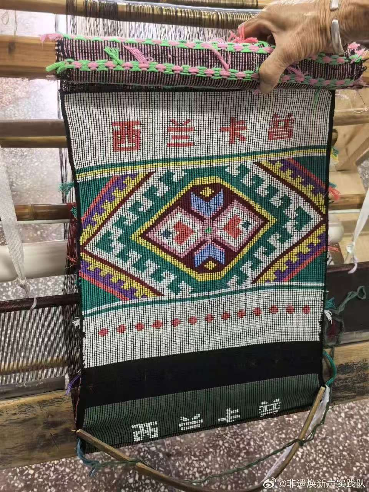
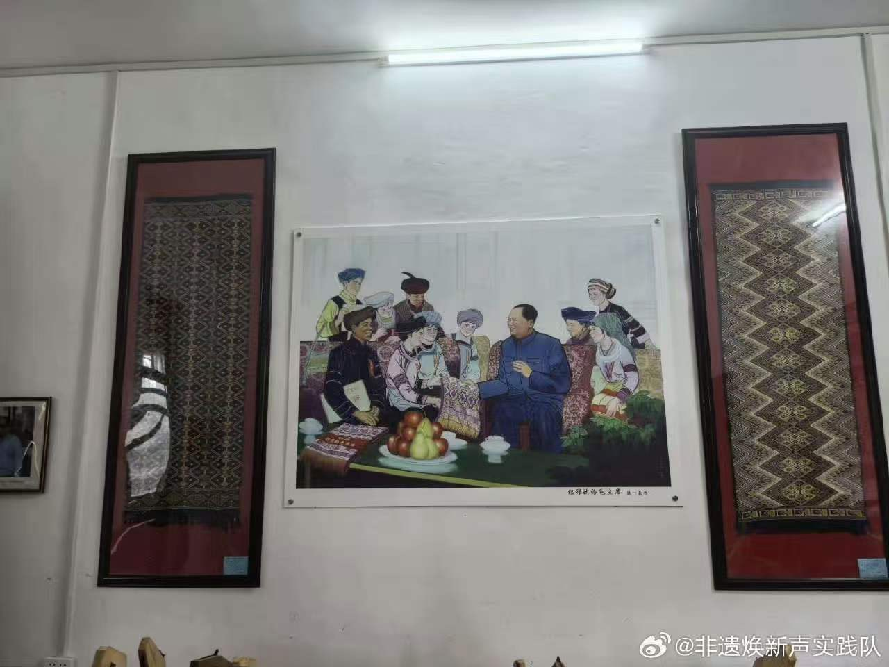
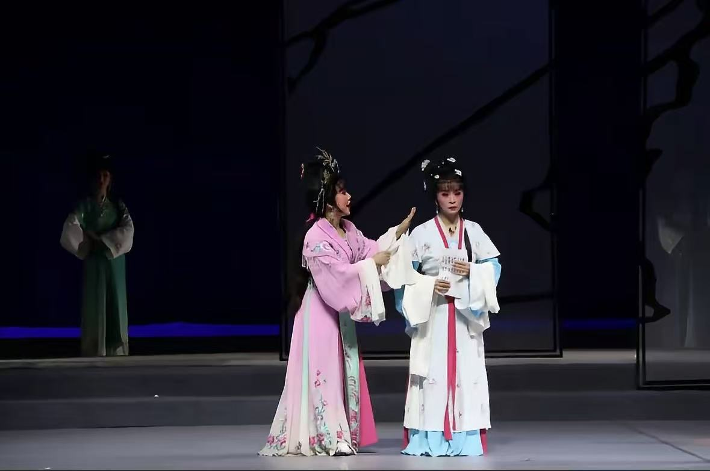
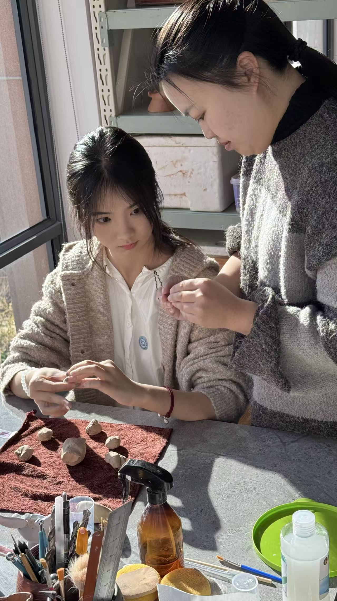
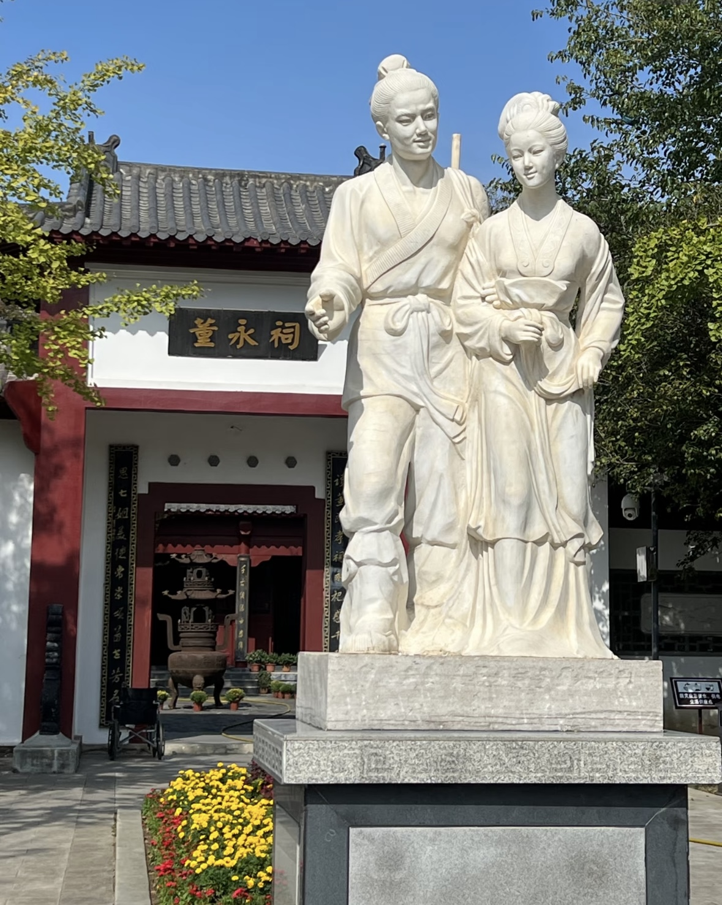
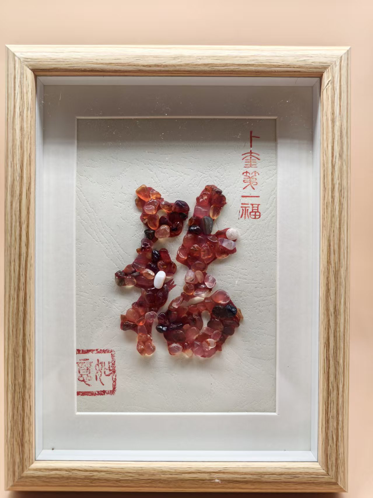
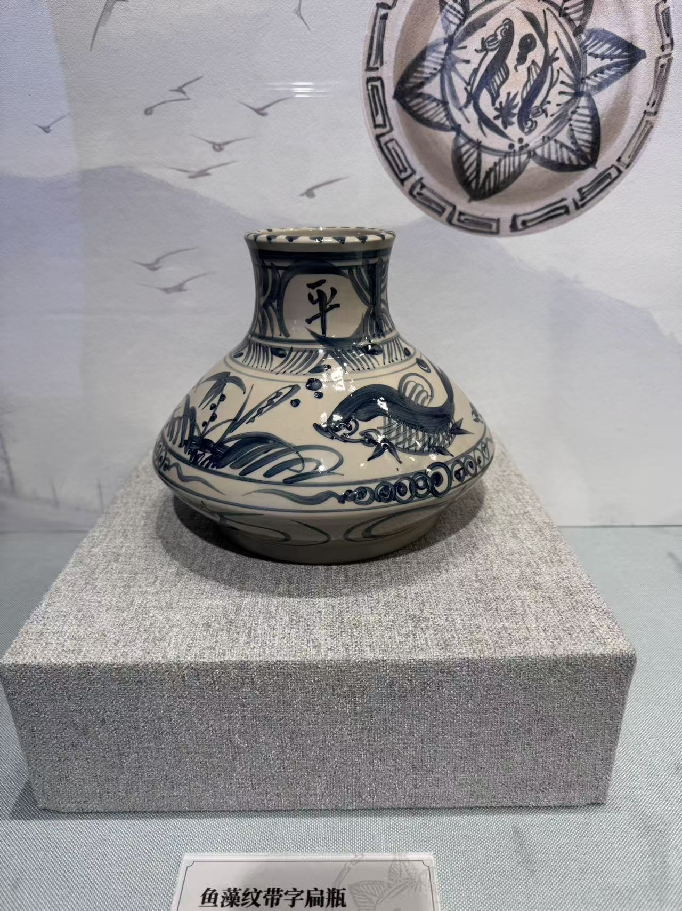
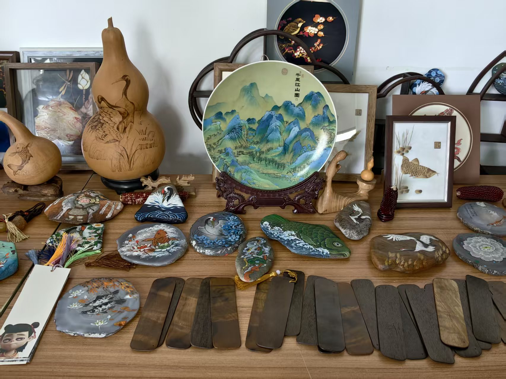
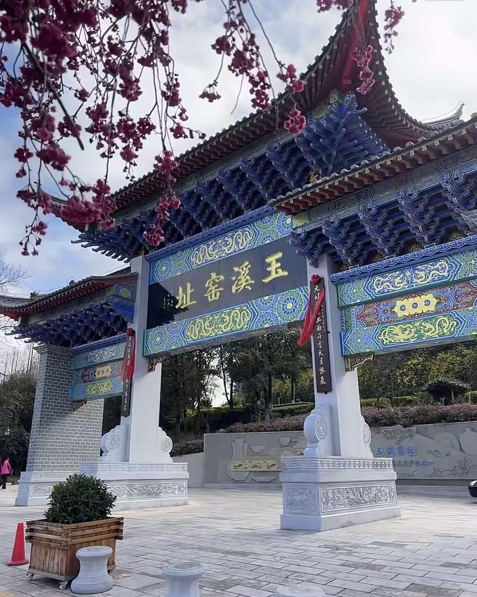

非遗简介
Introduction
非遗主要类别
Main Categories
- 传统手工艺：金石篆刻、陶艺、扎染、西兰卡普
- 传统表演艺术：京剧、昆曲、皮影戏、花灯
- 民俗节庆：春节、端午、中秋、苗族芦笙节
- 传统医药、饮食文化、民间文学等
- Golden stone seal carving, pottery, tie-dye, and Xilan Kapu
- Beijing Opera, Kunqu Opera, Shadow Puppetry, Lantern Opera
- Spring Festival, Dragon Boat Festival, Mid-Autumn Festival
- Traditional Medicine, Food Culture, Folk Literature, etc.
非遗影像展示
Photo Gallery











特色非遗项目（可自行添加）
Featured ICH Items (Editable)
1. 西兰卡普
西兰卡普是土家族传统手工织锦，土家语意为“花铺盖”，采用通经断纬技艺，以麻、棉纱为经线，多色彩粗丝、毛绒线为纬线手工编织而成。其纹样涵盖动物、植物、几何等类型，“四十八勾”象征团结美满，“阳雀鸟”承载祖先迁徙传说，被称作“高度浓缩的土家族文化”。该技艺雏形于秦汉时期，成型于两晋，成熟于唐宋，精于明清，1957年随土家族民族身份确认正式定名。
2. 花灯戏
花灯戏是广泛流行于中国各地的一种传统曲艺。其突出特征是手不离扇、帕，载歌载舞，唱与做紧密结合。花灯戏源于民间花灯歌舞，是清末民初形成的一种地方戏曲形式。在流行过程中因受当地方言、民歌、习俗等影响而形成不同演唱和表演风格。
3. 瓦猫
瓦猫是云南汉族传统灰陶建筑装饰工艺，以老虎为原型制成素胎灰陶瑞兽，通常置于民居屋顶正脊、飞檐或门头瓦脊处，具有镇宅避邪、招财进宝的文化功能。其造型特征包含额头刻'王'字、前足执八卦、大口獠牙、背竖泥尾等元素，制作工艺以手工捏制泥坯后与砖瓦同窑烧制为主，成品需经开光仪式后安放。
4.金石篆刻
它是书法和雕刻相结合的独立的艺术，是书法通过刀刻以后的再现。因为镌刻印章，一般采用篆书，先写后刻，故名篆刻。而篆刻材料又多为硬度高的金属，如铜、金、银、铁，或玉石、象牙、兽骨……故又称金石篆刻。中国篆刻艺术源远流长，早在殷代就有较高的水平。周代青铜质的“周玺”，大小形状各异，风格严谨、苍厚，表现了人们坚强纯朴的性格美。秦代金石篆刻有大发展，风格品种多样，结构精致巧妙。汉代又空前兴盛。
5. 孝感孝文化
孝感因“孝”得名，以“孝”闻名。古代二十四孝中，董永行孝感天、孟宗哭竹生笋感地、黄香扇枕温衾感人的故事都发生在孝感，其中以“董永行孝感天”最为有名。清代学者顾祖禹《读史方舆纪要》记载：汉安陆县地，刘宋置孝昌县，以孝子董永名也。据考证，南朝宋世祖孝武帝刘骏，大力倡导孝行，于孝建元年（公元454年），在此处设置新县，取名“孝昌”，以彰此地民风淳正、孝行昌盛。五代后唐时期，庄宗李存勖为避祖父李国昌的名讳，在同光二年（公元924年）改孝昌为“孝感”，取意“以孝感天下”。由此，这里以“孝”为名，已有1570多年历史。明清时期，这里广修墓祠碑坊，祭奉孝义典型，孝道思想蓬勃发展，孝子故事层出不穷。自1996年以来，孝感连续开展“十大孝子”和“十大孝亲敬老小天使”评选表彰活动，共评选出200多名新时代孝子，他们的感人事迹不断赋予孝文化“孝忠、孝诚、孝敬、孝爱”时代内涵，他们的精神力量滋润感召着一代又一代澴川儿女，凝聚成“中国孝文化之乡”丰厚的孝德资源，孕育出“至孝至诚，图强图新”的孝感精神。
6. 嫩江红玛瑙
嫩江红玛瑙，又名北红玛瑙，盛产于嫩江流域，经亿万年地质作用与江水冲刷孕育而成，色泽浓艳温润，质地坚硬细腻。嫩江红玛瑙雕刻技艺为黑龙江省级非物质文化遗产，历史悠久，源自远古先民石器制作技艺。匠人恪守传统工序，巧用原石俏色精工雕琢，承载北疆地域文明与传统匠心，是极具特色的北方非遗瑰宝。
1. Xilan Kapu
Xilan Kapu is a traditional handmade brocade of the Tujia ethnic group, which means "flower covering" in Tujia language. It is woven by hand using the technique of cutting warp and weft, with hemp and cotton yarn as the warp and multi-color coarse and plush threads as the weft. Its patterns cover types such as animals, plants, geometry, etc. The "Forty Eight Hooks" symbolize unity and happiness, while the "Yang Bird" carries the legend of ancestral migration and is known as the "highly condensed Tujia culture". This technique originated in the Qin and Han dynasties, took shape in the Jin dynasty, matured in the Tang and Song dynasties, and was proficient in the Ming and Qing dynasties. It was officially named in 1957 with the confirmation of the ethnic identity of the Tu family.
2. Lantern Opera
Lantern opera is a traditional folk art widely popular throughout China. Its prominent feature is the constant use of fans and handkerchief, singing and dancing, and a close combination of singing and acting. Lantern opera originated from folk lantern songs and dances, and is a form of local opera formed in the late Qing Dynasty and early Republic of China. Different singing and performance styles are formed during the popular process due to the influence of local dialects, folk songs, customs, etc.
3.Tile Cat
Tile Cat is a traditional gray pottery architectural decoration craft of the Han ethnic group in Yunnan. It is made of plain grey pottery auspicious beasts based on tigers and is usually placed on the roof ridge, eaves, or door tile ridge of residential buildings. It has cultural functions of warding off evil and attracting wealth and treasures. Its styling features include the carving of the character 'Wang' on the forehead, holding the Eight Trigrams on the front foot, large mouth fangs, and a vertical mud tail on the back. The production process mainly involves manually shaping clay blocks and firing them in the same kiln as bricks and tiles. The finished product needs to undergo a consecration ceremony before being placed.
4. Golden stone seal carving
It is an independent art that combines calligraphy and sculpture, and is the reproduction of calligraphy through knife carving. Because seal engraving usually uses seal script, writing first and then engraving, hence the name seal engraving. And the materials for seal carving are mostly high hardness metals such as copper, gold, silver, iron, or jade, ivory, animal bones... Therefore, it is also known as gold and stone seal carving. Chinese seal carving art has a long and rich history, reaching a high level as early as the Yin Dynasty. The "Zhou Xi" made of bronze from the Zhou Dynasty varies in size and shape, with a rigorous and thick style, expressing people's strong and simple character beauty. The Qin Dynasty saw great development in stone and seal carving, with diverse styles and exquisite structures. The Han Dynasty was once again unprecedentedly prosperous.
5. Filial Piety Culture
Xiaogan is named after "filial piety" and is known for it. In the ancient Twenty Four Filial Piety, stories of Dong Yongxing's filial piety to the heavens, Meng Zong's crying bamboo shoots and feeling the earth, and Huang Xiang's warm pillow all took place in Xiaogan, among which "Dong Yongxing's filial piety to the heavens" is the most famous. According to Gu Zuyu, a scholar of the Qing Dynasty, in his "Summary of Reading Historical Maps," Han Anlu County was established by the Liu Song Dynasty as Xiaochang County, named after his filial son Dong Yong. According to research, Emperor Xiaowu of the Southern Song Dynasty, Liu Jun, vigorously advocated filial piety. In the first year of Xiaojian (454 AD), a new county was established here and named "Xiaochang" to demonstrate the integrity of the local people and the prosperity of filial piety. During the Later Tang Dynasty of the Five Dynasties, Emperor Zhuangzong Li Cunxu changed the name of Xiaochang to "Xiaogan" in the second year of Tongguang (924 AD) to avoid the name of his grandfather Li Guochang, meaning "to show filial piety to the world". Therefore, it has a history of more than 1570 years under the name of "filial piety" here. During the Ming and Qing dynasties, tombs, shrines, steles, and archways were extensively built here, and typical examples of filial piety were worshipped. The concept of filial piety flourished, and stories of filial piety emerged one after another. Since 1996, Xiaogan has continuously carried out the selection and commendation activities of "Top Ten Filial Sons" and "Top Ten Filial Piety and Respect for the Elderly Little Angels", selecting more than 200 filial sons of the new era. Their touching deeds have continuously endowed the filial culture with the connotation of "filial loyalty, filial sincerity, filial piety, and filial love" in the era. Their spiritual power has nourished and inspired generation after generation of children in Sichuan, condensed into the rich filial piety resources of the "hometown of Chinese filial piety culture", and nurtured the filial piety spirit of "utmost filial piety and sincerity, striving for strength and novelty".
6. Nenjiang Red Agate
Nenjiang Red Agate, also known as North Red Agate, is abundant in the Nenjiang River Basin and has been nurtured by geological processes and river water erosion for billions of years. It has a rich, bright, warm and moist color, and a hard and delicate texture. The carving technique of Nenjiang Red Agate is a provincial-level intangible cultural heritage of Heilongjiang Province, with a long history originating from the ancient stone tool making skills of our ancestors. Craftsmen adhere to traditional procedures, skillfully carving with exquisite colors of raw stones, carrying the regional civilization and traditional craftsmanship of northern Xinjiang, and are highly distinctive treasures of northern intangible cultural heritage.